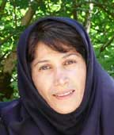
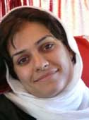
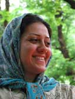
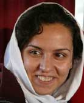
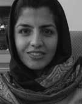
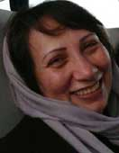
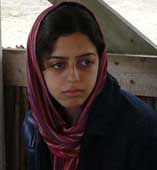
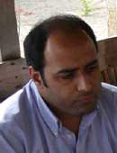
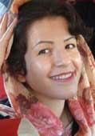

پذيرش > مقالات > علیه سکوت > میزگرد رسانه های کمپین
 نقد از درون نقد از درون

 میزگرد رسانه های کمپین میزگرد رسانه های کمپین
15 خرداد 1387 - کمپین رشت - نسخه قابل چاپ
کمپین رشت: در دومین روز از نشست دو روزهی اعضای فعال کمپین در رشت، میزگرد رسانههای (سایتهای) کمپین و چگونگی ارتقای نقش رسانهها، برگزار شد.
این میزگرد با حضور سحر روان و زهره اسدپور از کمپین رشت، نفیسه آزاد، نوشین کشاورزنیا، زینب پیغمبرزاده و سمیه فرید از کمپین تهران، جمشید آییندار از کمپین کرج، مینو کیامان، هایده تابش و الناز از کمپین اصفهان، گردانندگان چهار سایت کمپین (کمپین رشت، تغییر برای برابری، کمپین کرج، کمپین اصفهان) برگزار شد، اولین سوالی که در این میزگرد طرح شد تعریف رسانهی کمپین بود. در پاسخ به این سوال پاسخهای زیر داده شد:
مینو کیامان:

سایتهای کمپین، سایتهایی هستند که درگیر مسایل کمپین یک میلیون امضا برای تغییر قوانین تبعیضآمیزند، بنابراین آگاهیرسانی آنها دررابطه با مسایل کمپین است، چنین سایتی، رسانه کمپین است.
سمیه فرید:

"در ابتدا به نظر من مهم است که یک رسانه خود را رسانه کمپین بداند، ما سایتهایی داریم که اخبار کمپین را پوشش میدهند، اما خود را رسانهی کمپین نمیدانند، چنین سایتهایی خود را رسانه کمپین معرفی نمیکنند بلکه قسمتی از آنها به پوشش اخبار کمپین میپردازد. علاوه بر این سایتهای کمپین دموکراتیک هستند و اعضای کمپین که در شهرها کار میکنند در تصمیمگیریهای رسانه خود نقش دارند و درعین تامین مطالب، در سیاستگذاری آن رسانه نقش دارند."
سحر روان:

"تعریف هر شهر از رسانه بستگی به شرایط و فضای کار همان شهر دارد، بااینحال رسانه کمپین رسانهای است که محدودهی کار خود را کمپین قرار میدهد همچنین موضوع دیگر این است که سایتهای کمپین روی مسایل حقوقی تمرکز دارند و چاپ مطالب را در راستای دیدگاههای مختلف فکری درمورد زنان و رسیدن به خواسته خود یعنی برابری حقوقی منتشر میکنند. البته همه سایتها بخشهایی دارند که مرتبط با کمپین نیست مثلاً قسمت خارج از چارچوب سایت تغییر که درمورد مسایل مختلف مرتبط با حوزه زنان است و نه لزوماً کمپین. ولی جهت همه بخشهای سایت درنهایت درجهت هدف کمپین است.
در پاسخ به این سوال که کدام مطلب، به کمپین مربوط است و اصولاً حوزه مطالب کمپینی کدام است؟ شرکتکنندگان چنین پاسخ دادند:
نفیسه آزاد:

"در شرایط فعلی نمیشود گفت، تنها مطالبی که در حوزهی قانون نوشته شود، کمپینی است. کمپین یک حرکت اجتماعی است و بحث دربارهی ساختار، سلسلهمراتب، چالشهای اجتماعی و خیلی چیزهای دیگر به کمپین مربوط میشود. کمپین یک محوریت خیلی بزرگ است. مثلاً سهم زنان از فضای عمومی موضوع کمپین است، چون در فضای عمومی امضا میگیریم و کمپین از دل حرکت در فضای عمومی به شکل تجمع (حرکت ۲۲ خرداد) بیرون آمده است."
سمیه فرید: " من فکر میکنم تعیین حوزهای که به کمپین مربوط میشود خیلی سلیقهای است. ممکن است نفیسه معتقد باشد فضای شهری به کمپین مربوط است و شخص دیگری جور دیگری فکر کند. مثلاً عدهای فکر کنند تصویر زنان در کتابهای درسی به کمپین مربوط است و میتوان در سایت کمپین از آن استفاده کرد یا عدهای دیگر در منطقهای که ختنهی زنان در آن رواج دارد معتقد باشند که این موضوع به کمپین مربوط است و بقیه اینطور فکر نکنند ولی برای من مهم این است که حداقل مطالب سایت به مسایل زنان مربوط باشد و نه اینکه بخشی در سایت کمپین باشد که افراد به بیان دیدگاههای سیاسی خود بپردازند."
نوشین کشاورزنیا:

"این انتخاب شخصی نیست برپایه استدلال است. مثلاً مطلبی که درباره مشارکت سیاسی است، باتوجه به اینکه یکی از قوانین مورد اعتراض کمپین، بحث "رجل سیاسی" است، آن مطلب به کمپین مربوط است. اما اگر مطلبی باشد که درباره اشتغال زنان در بازار اولیه و ثانویه است، چون فعلاً در کمپین به قانون کار نپرداخته ایم، آن مطلب به کمپین مربوط نمیشود ولی باتوجه به محدودیتهای فضای مجازی، میشود بخشی را هم به این دسته مطالب اختصاص داد. اما این بخش معمولاً در حاشیه باقی میماند و به بخش اصلی سایت تبدیل نمیشود.
گاهی اوقات مطالبی نوشته میشود که جنبه نظری دارد، این دسته مطالب نیز بسیار مهم است چون همیشه بحثهایی درباره سیاستگذاریهای کلی کمپین و مناسبات آن با عقاید مختلف مطرح بوده، اما این مطالب نیز در سایت باید به شکلی ارایه شود که نشاندهنده ارتباط آن با کمپین باشد."
سحر روان: "بعد از یک سال و نیم از آغاز به کار کمپین، دیگر طرح مسایل کمپین به تنهایی، در سایت کفاف پاسخگویی به همه سوالاتی را که درباره کمپین وجود دارد نمی دهد، در این شرایط مطالبی که در رسانه منتشر میشود باید مربوط به مسایل زنان باشد و میشود از این مطالب برای روشن کردن شبهاتی که به کمپین وارد است کمک گرفت، اما لزوماً این مطالب درباره کمپین و قانون نخواهد بود."
مینو کیامان: "تمرکز در هر کاری پیشبرد آن کار را تضمین میکند. اگر ما در یک حوزهی وسیعتر از کمپین احساس نیاز میکنیم، این موضوع سایت یا وبلاگ دیگری را میطلبد. تمرکز کمپین بر مسایل حقوقی زنان است بنابراین حوزه عمل رسانههای کمپین مشخص است: زنان و قوانین تبعیضآمیز. اما طبق طرح، کمپین بر ۱۳ مورد از قوانین تبعیضآمیز تکیه دارد. این در حالی است که زنان دچار تبعیضات بیشماری هستند. با این وجود هرچه تمرکز بر مسایل کمپین بیشتر باشد در پیشبرد اهداف کمپین موثرتراست. نباید فراموش کرد که ما به کمپین متعهدیم و بهتر است بهخاطر گرایشات سیاسی خودمان از محدوده اهداف کمپین (بهخصوص در سایت) خارج نشویم، این به کمپین جهت دیگری میدهد (چنانکه در برخی شهرها تمایل به حقطلبیهای قومی، رسانهی کمپین در این شهرها را تحتتاثیر قرار داده است). برای حل این مساله ما در اصفهان تصمیم داریم در کنار سایت کمپین اصفهان، یک نشریه خاص جنبش زنان و فعالیتهای مربوط به این جنبش را داشته باشیم."
هایده تابش:

"غیر از تغییر قوانین که هدف کمپین است، اگر قرار است مطالب دیگری هم طرح شود، بهجای درج در سایت میتوان به آن لینک داد."
سیاستگذاری سایتهای کمپین و نقش گردانندگان سایت در سیاستگذاری کمپین نیز از سوالات طرح شده در میزگرد بود؛ در پاسخ به این سوال نیز شرکتکنندگان پاسخهای مختلفی را دادند. که در زیر می آید:
نفیسه آزاد: "مسوولیت گردانندگی رسانه انجام کارهای فنی آن است و گردانندگی سایت به معنای آن نیست که گردانندگان بتوانند دربارهی محتوای رسانه هم تصمیمگیری کنند. مطالب سایت برآیند نظرات فعالین است که این رسانه آنها را نمایندگی میکند. اگر برآیند نگرش همهی فعالین در حوزهای مکانی به سمتوسوی هرکدام از نحلههای بینشی و روشی باشد، طبیعی است که محتوای سایت هم به همان سمت میرود و این به نظرم طبیعی است.
سمیه فرید: " گرچه گردانندگان سایت در سیاستگذاری آن نقش دارند و جهتگیری رسانه برآیند فعالین آن است اما این کافی نیست. این برآیند ممکن است خارج از حدود کمپین باشد، مثلاً اگر برآیند فعالین یک منطقه هویتطلبی باشد و بیشتر مطالب آن در این مورد باشد دیگر نمیتوان سایت هویتطلب آن منطقه را سایت کمپین دانست."
و در پاسخ به نقش وظیفهی سایت تغییر برای برابری و سایتهای دیگر شهرها پاسخهای زیر عنوان شد:
نفیسه آزاد: " شايد موضع سايت تغيير براي برابري بهعنوان اولين سايت کمپين و سايتي که در اين زمينه به رسميت شناخته شده کمی متفاوت باشد. وظیفهی این سایت در پوشش اخبار و تریبون دادن به اعضایی از کمپین که ممکن است رسانهای نداشته باشند، شاید کمی از بار محلی بودن آن کم کند و وظایف دیگری را برای آن بهوجود بیاورد، البته زمانی که سایتهای شهرها و یا هر رسانهی کمپین دیگر توانمندتر شوند، همهی این رسانهها میتوانند به شکل شبکهای عمل کنند.
زینب پیغمبرزاده:

"من فکر میکنم سایت تغییر برای برابری مخصوصاً در شرایط حاضر که سایتهای شهرستانها، فعالتر شدهاند، باید خود را سایت بخشی از کنشگران تهران معرفی کند و به این معنا محلی شود، درعینحال چون این سایت از اول بوده و فعالینش شناختهترند، میتواند منبع موثق باشد.
همچنین تغییر برای برابری میتواند شهرهایی را که هنوز رسانه کمپین ندارند، پوشش دهد و مطالب فعالین آن شهرها را منتشر کند.
سایت کمپین در هر شهری میتواند موضوعات مختلفی را دربربگیرد، اما سایت تغییر برای برابری موظف است همهی ایران را در نظر بگیرد و به دموکراتیک بودن حرکت کمپین متعهد باشد و مقالات مختلف از گرایشات مختلف را پوشش دهد."
جمشید آییندار:

"اصول رسانه کمپین باید همان بیانیه کمپین باشد. اما چون دغدغه زنان در شهرهای مختلف لزوماً دغدغههای زنان تهران نیست، رسانه کمپین در شهرها علاوه بر بحث در موارد حقوقی و قانونی باید مسایل و مشکلات خاص زنان منطقهی خود را هم منعکس کند."
مینو کیامان: "اگر بخواهیم درباره مشکل رسانهها در شهرهای مختلف ملموستر بحث کنیم، باید به کمبود مطلب و محدودیت افرادی که مطلب ارایه میدهند، اشاره کنیم. مساله دیگر که ما در شهرستانها داریم محدودیت فضای وبلاگ است. که نمیتوان آن را به بخشهای مختلف تقسیم کرد و مطالب هر بخش را در جای خودش منتشر کرد."
آخرین موضوعی که در این میزگرد به بحث گذاشته شد، ایجاد رسانههای کمپین با هویت فکری مشخص بود:
زهره اسدپور:

"بعد از گذشت بیش از یک سال و نیم از کمپین، ما مرحلهی اضطراب و التهاب اولیه را از سر گذراندهایم، کمپین فعالان خود را یافته است و گفتمان خود را در جامعه طرح کرده است، دقیقاً در این شرایط است که معتقدم زمان پاسخ به این پرسش است که "بعد از کمپین چه خواهیم کرد؟" و پاسخ به این پرسش را نباید به پایان کمپین موکول کرد و باید از همین حالا برای ادامهی مسیر جنبش برنامه ریخت، از طرفی هرکدام از ما به دیدگاهی معتقدیم و به آن متعهدیم و فکر میکنیم آن دیدگاه به مسایل زنان پاسخ میدهد، در شرایط حاضر که کمپین گفتمان خود را عمومی کرده است زمان ایجاد سایتهایی با دیدگاههای مشخص است و این به جنبش زنان درکل و اینکه بعد از کمپین چه باید کرد بسیار کمک میکند.
درواقع باید در کنار سایت تغییر برای برابری که تلاش میکند خنثی باشد و منبع موثق خبری باشد و سایتهای شهرها که براساس تقسیمبندی منطقهای است، مثلاً سایتی داشته باشیم که از منظر چپ از کمپین دفاع کند و البته خود را بهعنوان چپهای حامی کمپین معرفی کند."
زینب پیغمبرزاده: "و در این صورت آیا گردانندگان سایتی که چپ است مطالب دیدگاههای دیگر را پوشش نخواهد داد؟
مثلاً اگر کسی در یک سایت چپ کمپین خواست مطلب راست بنویسد اینکه به او گفته شود، ما این مطلب را کار نمیکنیم و برو برای خودت سایت بزن بسیار وحشتناک است، شاید آن فرد همیشه فرد بماند و گروه نشود، شاید ترجیحش این باشد که با شما کار کند، شما حق ندارید او را طرد کنید.
کمپین از اول گفته که قرار نیست نمایندهی ایدئولوژی خاصی باشد، هر کس حق دارد با هر ایدئولوژی با کمپین کار کند."
زهره اسدپور: "من فکر میکنم نمیتوان این موضوع را بهلحاظ اخلاقی زیر سوال برد. مثلاً سایتهایی را که الان وجود دارد و دیدگاههای مختلف و گاه متضادی دارند در نظر بگیرید، کسی که میتواند به یک سایت راست مذهبی مطلب بدهد قطعاً نمیرود آن مطلب را به یک سایت چپ بدهد، چون آن شخص متعلق به یک طرز تفکر خاص است و میخواهد سایت همان طرز تفکر را تقویت کند، و اصولاً آن مطلب در آن سایت است که مخاطبهایش را مییابد.
الان در کمپین طیفهای مختلف فکری وجود دارد، ممکن است کسی بخواهد به موضوعی از دید چپ بپردازد، چه اشکالی دارد سایتی هم باشد که اینگونه مطالب را منتشر کند.
حتی نه فقط بهخاطر اختلافات فکری، بلکه اگر دو گروه به دو شیوهی مختلف بخواهند کمپین را پیش ببرند، یکی با هستههای خودبنیاد، و یکی با کمیتهها، (اگر پروسهای را که طی میشود کنار بگذاریم و جداگانه بررسی کنیم) خود این جدایی هیچ اشکالی ندارد و حتی خوب است.
گروهی فکر میکنند به شکل هسته خودبنیاد میتوانند بهتر کار را پیش ببرند و گروهی دیگر به شکل کمیته... این حق آنهاست که طبق هر شکلی که درست میبینند عمل کنند.
من نیز معتقدم چپ میتواند به مسایل زنان پاسخ بدهد و از آنجاییکه نمیخواهم بعد از پایان کمپین به مسایل دیگر زنان بپردازم و میخواهم از الان مسایل مختلف را مطرح کنم، حق دارم سایت خودم را داشته باشم. همهی دیدگاههای مختلف نه تنها حق، که وظیفه دارند سایتهای خود را داشته باشند و بحثهای خود را ارایه کنند، طبیعتاً یک چپگرا نمیآید مطلباش را در سایت لیبرالها بزند.
درواقع با این کار، بحثهایی را که در جمعهای خصوصیمان بین دیدگاههای مختلف داریم، عمومی میکنیم و این به روشنتر شدن مسایل زنان و گزینش راهحلهای بهتر کمک میکند."
نفیسه آزاد: "البته تکثرگرایی با موازیکاری متفاوت است. وقتی کسی ایدئولوژیای دارد و بر روی تبلیغ آن پافشاری میکند و میخواهد هویت خود را با آن دیدگاه در کمپین بگوید و بحث کند و تبلیغ کند، تکثرگرایی در پیش است. اما اگر ما و شما به این دلیل که از هم خوشمان نمی آید، از هم جدا شویم، تکثر نیست، اختلاف شخصی است. وقتی هر دوی ما نه آنقدر چپیم که بخواهیم تبلیغ چپ کنیم و نه آنقدر راست که تبلیغ راست کنیم و هر دومان معتقدیم که کمپین خواستهمحور است و جمعآوری امضا را بهعنوان روشی مسالمتآمیز در پیش گرفتهایم بازهم به دلالیل شخصی میتوانیم جداگانه کار کنیم ولی این با بحث قبلی کاملاً متفاوت است و به نظر من نام آن دیگر تکثر به معنای واقعی نیست."
نوشین کشاورزنیا: "قبل از هر اتفاقی باید بحث نظریاش طرح شود، این طرح بحث پیش از اجرای یک تصمیم موجب میشود تا تصمیمگیریها حسابشدهتر صورت گیرد و فضای دوستانه آسیب نبیند."
هایده تابش در انتهای این میزگرد با انسانی خواندن اهداف کمپین گفت: "امروز از هر طیفی باشیم هدفمان انسانی است و اگر انسانی بودن قضیه را درنظر بگیریم و به این موضوع از دید انسانی نگاه کنیم، همهی این سوءتفاهمها حل می شود."
کمپین رشت
ارسال به
بالاترین
،
توییتر
،
فریندفید
،
فیسبوک
در همين بخش :
 8 مارس روزی که نمی توان از ما دریغ کرد 8 مارس روزی که نمی توان از ما دریغ کرد
با طلاق توافقی از حقارت و کتک و فحش رها شدم /گزارشی از دادگاه محلاتی: مریم مالک
تجمع مادران عزادار در رشت
تغییر ممکن است/ جلوه جواهری(26 روز پس از بازداشت کاوه مظفری)
گامهایی که با تزلزل نا آشنایند/ گرامی داشت چهلم ندا در رشت
ديگر بخش ها :
طرح یک میلیون امضا
|
مقالات
|
سایت نوشته ها
|
اخبار
|
گزارش كمپين
|
گفت و گو
|
علیه سکوت
|
كوچه به كوچه
|
نامه های شما
|
گزارش ویژه
|
گفتگو با اعضا
|
ویژه سالگرد کمپین
|
تصویر برابری
|
دل آرام علی
|
تریبون
|
مقالات
|
تاریخ شفاهی
|
خارج از چارچوب
|
کتابخانه
|
درباره کمپین
|
کمپین در شهرها
|
کمپین در بند
|
صدای تغییر
|
ویژه 22 خرداد
|
لایحه حمایت از خانواده
|
گالری
|
عشا مومنی
|
امیر یعقوبعلی
|
خدیجه مقدم
|
راحله عسگری زاده و نسیم خسروی
|
پروین اردلان،جلوه جواهری، مریم حسین خواه، ناهید کشاورز
|
زینب پیغمبرزاده
|
سعیده امین، سارا ایمانیان، محبوبه حسین زاده، ناهید کشاورز و همایون نامی
|
احترام شادفر
|
نسیم سرابندی زاده،فاطمه دهدشتی
|
وبلاگ مهمان
|
پرونده خرم آباد
|
دستگیری ها
|
مریم مالک
|
پرستو اللهیاری
|
مهرنوش اعتمادی
|
سمیه رشیدی
|
Other Languages
|
همراهان
|
«فراخوان کمپین ده روز با بهاره هدایت»
| English
|